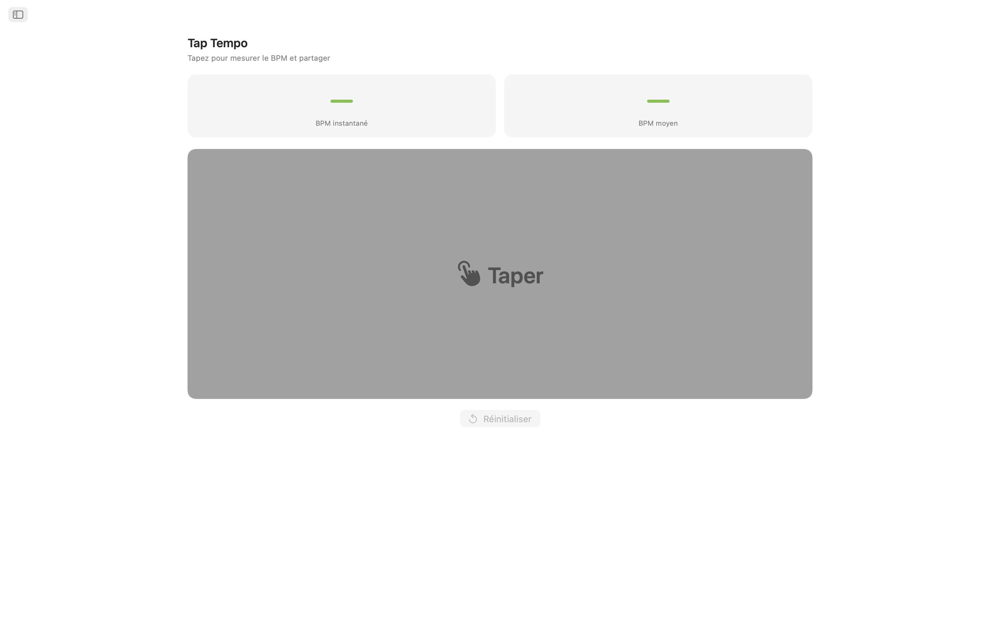
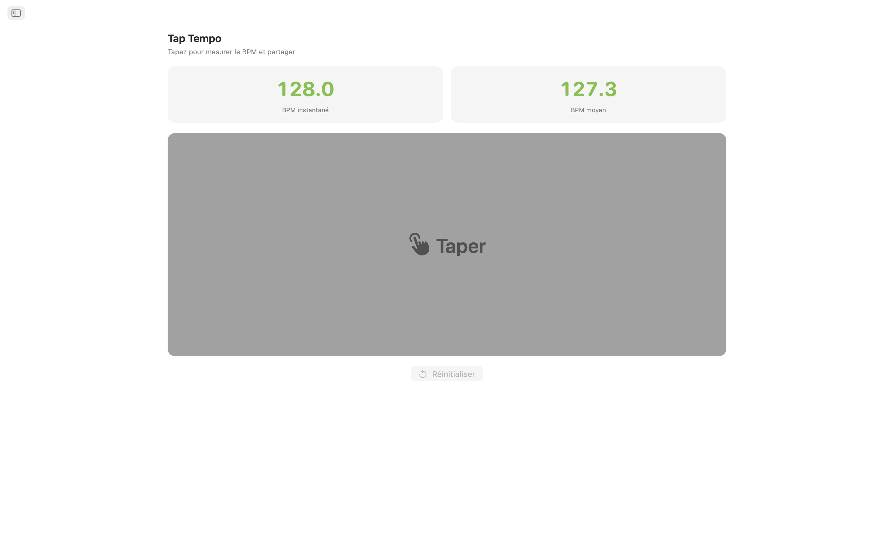
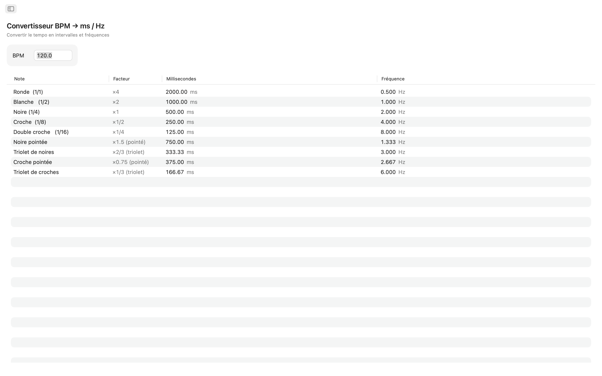
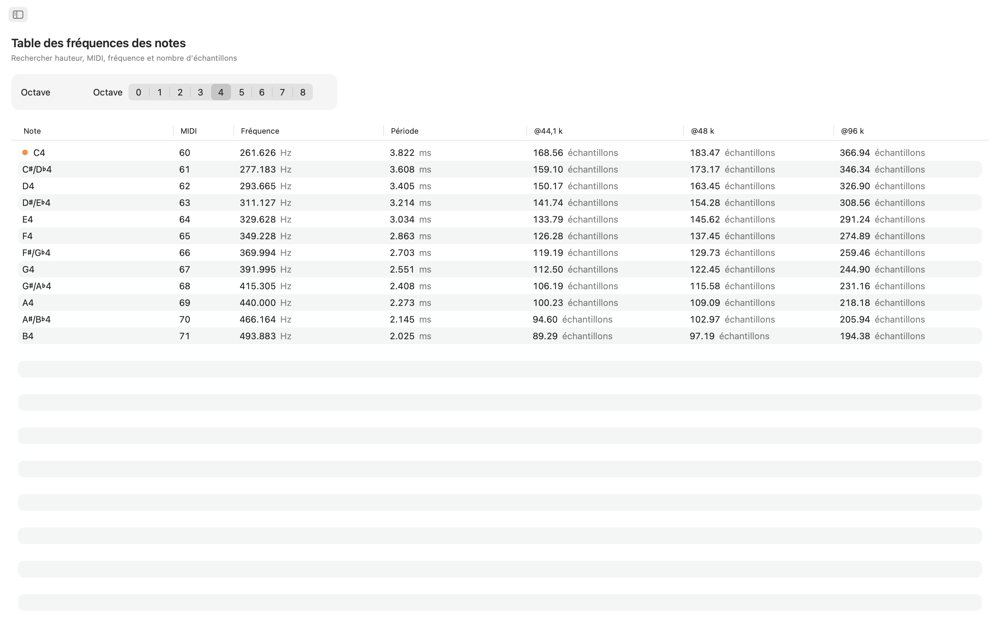
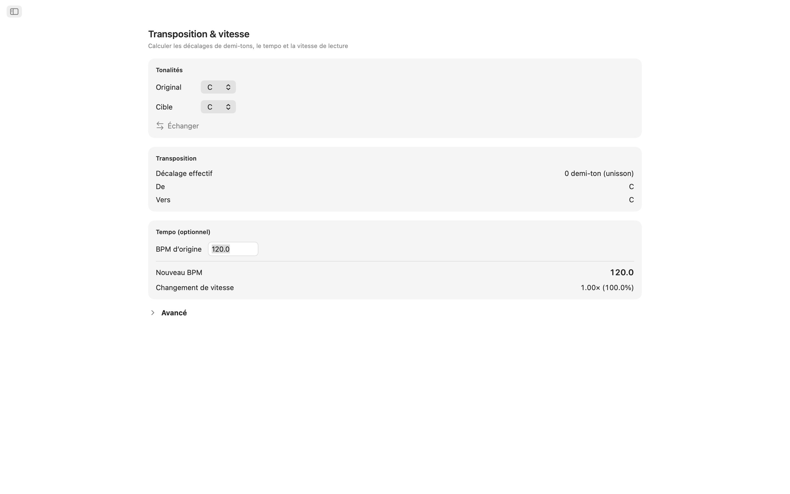
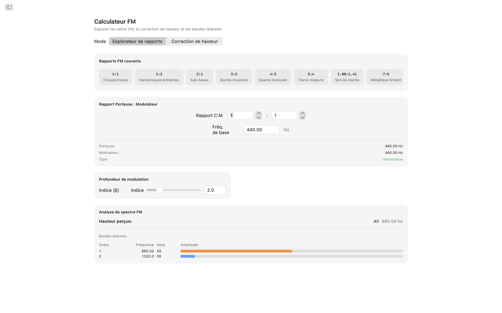
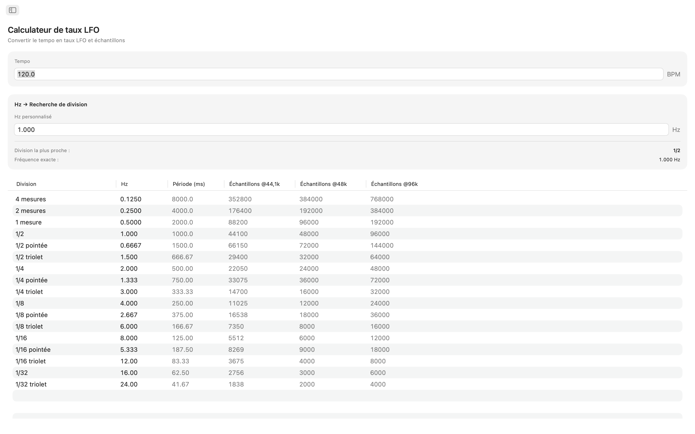
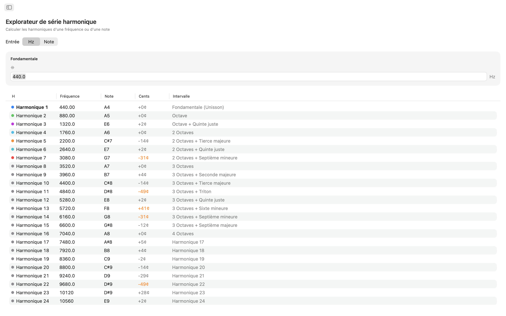
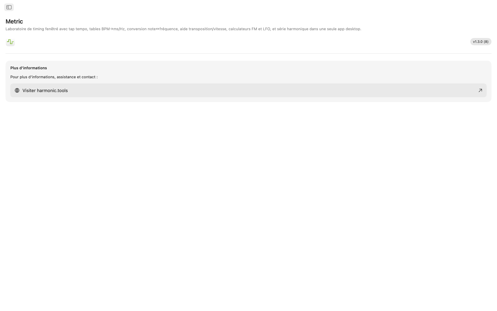

Metric pour macOS
Boîte à outils de timing et de fréquences pour macOS. Que vous régliez des temps de délai dans un mix, accordiez un patch FM, synchronisiez un LFO ou transposiez un sample, Metric vous donne des réponses instantanées et précises le tout dans une application avec navigation par barre latérale qui se place à côté de votre DAW.
- Tap Tempo avec BPM partagé entre les outils
- Convertisseur BPM → ms / Hz (normal, pointé, triolet)
- Table note ↔ fréquence (108 notes, accordage ajustable)
- Transposition et vitesse, calculateur FM, taux LFO, 32 harmoniques
Captures d'écran
Comprend des captures en mode clair et sombre qui suivent le thème du site.










Fonctionnalités
- Tap Tempo : Cliquez sur la grande cible de tap pour mesurer le tempo. Voyez le BPM instantané de votre dernier tap et une moyenne glissante sur jusqu'à huit taps. Envoyez l'une ou l'autre lecture directement vers le convertisseur BPM, la transposition ou les taux LFO en un seul clic. Votre tempo circule automatiquement entre tous les outils.
- Convertisseur BPM → ms / Hz : Entrez un tempo et lisez les valeurs normales, pointées et triolets pour les rondes, blanches, noires, croches et doubles croches. Chaque ligne affiche les millisecondes et la fréquence en Hz, vous permettant de régler le délai, le pré-délai de réverbe ou le timing du sidechain sans calculatrice.
- Table de fréquences des notes : Parcourez les 108 notes chromatiques de C0 à B8. Chaque note affiche son numéro MIDI, sa fréquence en Hz, sa période en millisecondes et le nombre d'échantillons à 44,1 kHz et 48 kHz. Le Do central est signalé pour référence rapide. L'accordage A4 configurable (440 Hz par défaut) recalcule instantanément chaque valeur.
- Transposition et vitesse : Choisissez une tonalité d'origine et une tonalité cible pour voir le décalage en demi-tons, le nom de l'intervalle et la valeur de transposition DAW exacte. Ajoutez un BPM d'origine et Metric calcule le nouveau tempo et le ratio de vitesse de lecture. Affinez avec un curseur de cents (±100) et un curseur de vitesse couvrant deux octaves complètes (±24 demi-tons).
- Calculateur FM : L'explorateur de ratios vous permet de définir les ratios porteuse et modulateur avec une fréquence de base et de choisir parmi dix préréglages FM classiques, des octaves creuses (1:1) aux cloches inharmoniques (1:π). Le mode correction de hauteur fonctionne en sens inverse : choisissez une note cible et obtenez les fréquences exactes de la porteuse et du modulateur. Les deux modes affichent une table de bandes latérales avec jusqu'à dix partiels, leurs fréquences, les notes les plus proches et les amplitudes codées par couleur pilotées par un curseur d'indice de modulation.
- Calculateur de taux LFO : Convertissez n'importe quel BPM en taux LFO à travers 17 divisions musicales, de quatre mesures à 1/32 triolets. Chaque ligne affiche les Hz, la période en millisecondes et les échantillons par cycle à 44,1 kHz et 48 kHz. La recherche inverse vous permet d'entrer n'importe quelle valeur en Hz et de trouver la division musicale la plus proche, avec l'erreur clairement indiquée.
- Explorateur de séries harmoniques : Partez d'une fréquence ou choisissez n'importe quelle note et voyez les 32 premiers harmoniques listés avec la fréquence, le nom de la note la plus proche, l'écart en cents et l'étiquette d'intervalle. Les harmoniques de rang bas sont codés par couleur pour une identification facile. Les écarts supérieurs à 30 cents sont mis en surbrillance afin de repérer le contenu inharmonique d'un coup d'œil.
Des outils qui communiquent entre eux
Tapez un tempo une fois et il apparaît partout : le convertisseur BPM, la transposition et les taux LFO partagent tous le même BPM en temps réel. Changez votre référence d'accordage A4 et elle se met à jour simultanément dans la fréquence des notes, le calculateur FM et les harmoniques.
Conçu pour votre bureau
- Fonctionne entièrement hors ligne pas de compte, pas de publicités, pas de suivi
- Application macOS native avec navigation par barre latérale
- Interface compatible mode sombre qui suit l'apparence de votre système
- Deux fréquences d'échantillonnage standard : 44,1 kHz et 48 kHz
- Accordage de référence A4 configurable
- Fenêtre redimensionnable gardez-la ouverte à côté de votre DAW
Que vous soyez un producteur programmant des délais, un concepteur sonore sculptant des timbres FM, un claviériste accordant des oscillateurs, ou un ingénieur du son vérifiant des fréquences, Metric met chaque réponse en timing et fréquence sur votre bureau.